SqlServer基础之(触发器)
阅读目录
概念：
触发器（trigger）是SQL server 提供给程序员和数据分析员来保证数据完整性的一种方法，它是与表事件相关的特殊的存储过程，它的执行不是由程序调用，也不是手工启动，而是由事件来触发，当对一个表进行操作（ insert，delete， update）时就会激活它执行。触发器经常用于加强数据的完整性约束和业务规则等。 触发器可以从 DBA_TRIGGERS ，USER_TRIGGERS 数据字典中查到。
触发器和存储过程的区别:
触发器与存储过程的区别是运行方式的不同，触发器不能执行EXECUTE语句调用，而是在用户执行Transact-SQL语句时自动触发执行而存储过程需要用户，应用程序或者触发器来显示地调用并执行。
一:触发器的优点
1.触发器是自动的。当对表中的数据做了任何修改之后立即被激活。
2.触发器可以通过数据库中的相关表进行层叠修改。
3.触发器可以强制限制。这些限制比用CHECK约束所定义的更复杂。与CHECK约束不同的是，触发器可以引用其他表中的列。
二:触发器的作用
触发器的主要作用就是其能够实现由主键和外键所不能保证的复杂参照完整性和数据的一致性，它能够对数据库中的相关表进行级联修改，提高比CHECK约束更复杂的的数据完整性，并自定义错误消息。触发器的主要作用主要有以下接个方面：
- 强制数据库间的引用完整性
- 级联修改数据库中所有相关的表，自动触发其它与之相关的操作
- 跟踪变化，撤销或回滚违法操作，防止非法修改数据
- 返回自定义的错误消息，约束无法返回信息，而触发器可以
- 触发器可以调用更多的存储过程
三:触发器的分类
SqlServer包括三种常规类型的触发器：DML触发器、DDL触发器和登录触发器。
1.DML(数据操作语言,Data Manipulation Language)触发器
DML触发器是一些附加在特定表或视图上的操作代码，当数据库服务器中发生数据操作语言事件时执行这些操作。SqlServer中的DML触发器有三种：
- insert触发器:向表中插入数据时被触发；
- delete触发器：从表中删除数据时被触发；
- update触发器：修改表中数据时被触发。
当遇到下列情形时，应考虑使用DML触发器：
- 通过数据库中的相关表实现级联更改
- 防止恶意或者错误的insert、update和delete操作，并强制执行check约束定义的限制更为复杂的其他限制。
- 评估数据修改前后表的状态，并根据该差异才去措施。
2.DDL(数据定义语言,Data Definition Language)触发器
DDL触发器是当服务器或者数据库中发生数据定义语言(主要是以create,drop,alter开头的语句)事件时被激活使用，使用DDL触发器可以防止对数据架构进行的某些更改或记录数据中的更改或事件操作。
3.登录触发器
登录触发器将为响应 LOGIN 事件而激发存储过程。与 SQL Server 实例建立用户会话时将引发此事件。登录触发器将在登录的身份验证阶段完成之后且用户会话实际建立之前激发。因此，来自触发器内部且通常将到达用户的所有消息（例如错误消息和来自 PRINT 语句的消息）会传送到 SQL Server 错误日志。如果身份验证失败，将不激发登录触发器。
四：触发器的工作原理
触发器触发时：
- 系统自动在内存中创建deleted表或inserted表；
- 只读，不允许修改，触发器执行完成后，自动删除。
inserted表：
- 临时保存了插入或更新后的记录行；
- 可以从inserted表中检查插入的数据是否满足业务需求；
- 如果不满足，则向用户发送报告错误消息，并回滚插入操作。
deleted表：
- 临时保存了删除或更新前的记录行；
- 可以从deleted表中检查被删除的数据是否满足业务需求；
- 如果不满足，则向用户报告错误消息，并回滚插入操作。
inserted表和deleted表对照：
| 修改操作记录 | inserted表 | deleted表 |
|---|---|---|
| 增加(insert)记录 | 存放新增的记录 | ………… |
| 删除(deleted)记录 | ………….. | 存放被删除的记录 |
| 修改(update)记录 | 存放更新后的记录 | 存放更新前的记录 |
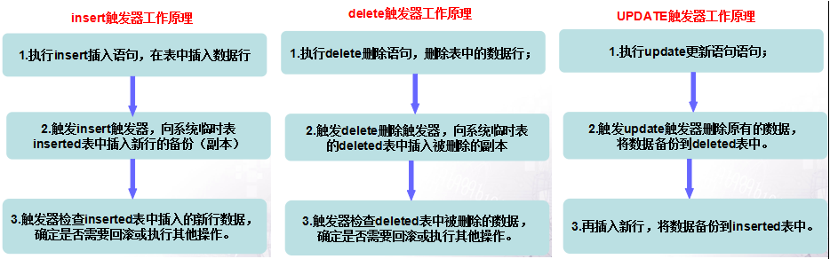
五:创建触发器
创建触发器的语法：
1 | CREATE TRIGGER trigger_name |
准备测试数据:
1 | --创建学生表 |
1.创建insert触发器
1 | --创建insert触发器 |
1 | --测试触发器trig_insert-->功能是向student插入数据的同时级联插入到student_sum表中，更新stuCount |
执行上面的语句后，结果如下图所示：
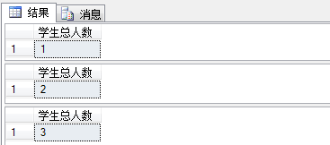
既然定义了学生总数表student_sum表是向student表中插入数据后才计算学生总数的，所以学生总数表应该禁止用户向其中插入数据
1 | --创建insert_forbidden,禁止用户向student_sum表中插入数据 |
1 | --触发触发器insert_forbidden |
结果如下：
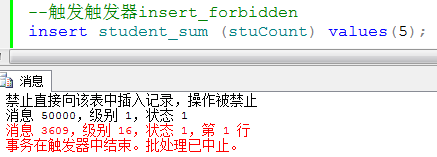
2.创建delete触发器
用户执行delete操作，就会激活delete触发器，从而控制用户能够从数据库中删除数据记录，触发delete触发器后，用户删除的记录会被添加到deleted表中，原来表的相应记录被删除，所以在deleted表中查看删除的记录。
1 | --创建delete触发器 |
1 | --执行一一条delete语句触发trig_delete触发器 |
结果如下：
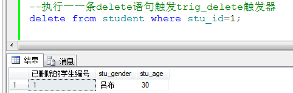
3.创建UPDATE触发器
update触发器是当用户在指定表上执行update语句时被调用被调用，这种类型的触发器用来约束用户对数据的修改。update触发器可以执行两种操作：更新前的记录存储在deleted表中，更新后的记录存储在inserted表中。
1 | --创建update触发器 |
1 | --创建完成，执行一条update语句触发trig_update触发器 |
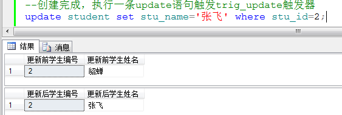
4.创建替代触发器
与前面介绍的三种after触发器不同，SqlServer服务器在执行after触发器的sql代码后，先建立临时的inserted表和deleted表，然后执行代码中对数据库操作，最后才激活触发器中的代码。而对于替代(instead of**)触发器,SqlServer服务器在执行触发instead of 触发器的代码时，先建立临时的inserted表和deleted表，然后直接触发instead of触发器，而拒绝执行用户输入的DML操作语句。**
1 | --创建instead of 触发器 |
创建完成，执行一条insert语句触发触发器trig_insteadOf
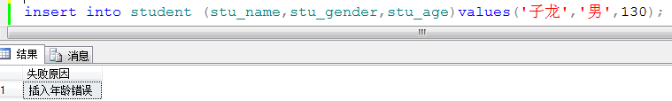
5.嵌套触发器介绍
如果一个触发器在执行操作时调用了另外一个触发器，而这个触发器又接着调用了下一个触发器，那么就形成了嵌套触发器。嵌套触发器在安装时就被启用，但是可以使用系统存储过程sp_configure禁用和重新启用嵌套触发器。
嵌套触发器不一定要形成一个环，它可以 T1->T2->T3…这样一直触发下去，最多允许嵌套 32 层。如果嵌套的次数超过限制，那么该触发器将被终止，并回滚整个事务，使用嵌套触发器需要注意以下几点：
- 默认情况下，嵌套触发器配置选项是开启的。
- 在同一个触发器事务中，一个嵌套触发器不能被触发两次。
- 由于触发器是一个事务，如果在一系列嵌套触发器的任意层次中发生错误，则整个事物都将取消，而且所有数据回滚。
嵌套是用来保持整个数据库的完整性的重要功能，但有时可能需要禁用嵌套，如果禁用了嵌套，那么修改一个触发器的实现不会再触发该表上的任何触发器。在下述情况下，需要禁用嵌套触发器：
- 嵌套触发要求复杂而有理论的设计，级联修改可能会修改用户不想涉及的数据。
- 在一系列嵌套触发器中的任意点的时间修改操作都会触发一些触发器，尽管这时数据库提供很强的保护功能，但如果以特定的顺序更新表，就会产生问题。
使用下列语句禁用嵌套和再次启用嵌套：
1 | --禁用嵌套 |
6.递归触发器
触发器的递归是指一个触发器从其内部再一次激活该触发器，例如update操作激活的触发器内部还有一条数据表的更新语句，那么这个更新语句就有可能激活这个触发器本身，当然，这种递归的触发器内部还会有判断语句，只有一定情况下才会执行那个T_SQL语句，否则就成为无线调用的死循环了。
SqlServer中的递归触发器包括两种：直接递归和间接递归。
- 直接递归：触发器被触发后并执行一个操作，而该操作又使用一个触发器再次被触发。
- 间接递归：触发器被触发并执行一个操作，而该操作又使另一个表中的某个触发器被触发，第二个触发器使原始表得到更新，从而再次触发第一个触发器。
默认情况下，递归触发器选项是禁用的。递归触发器最多只能递归16层，如果递归中的第16个触发器激活了第17个触发器，则结果与发布的rollback命令一样，所有数据都将回滚。
我们举例解释如下，假如有表1、表2名称分别为 T1、T2，在 T1、T2 上分别有触发器 G1、G2。
- 间接递归：对 T1 操作从而触发 G1，G1 对 T2 操作从而触发 G2，G2 对 T1 操作从而再次触发 G1…
- 直接递归：对 T1 操作从而触发 G1，G1 对 T1 操作从而再次触发 G1…
设置直接递归：
默认情况下是禁止直接递归的，要设置为允许有两种方法：
- T-SQL：exec sp_dboption ‘dbName’, ‘recursive triggers’, true；
- EM：数据库上点右键->属性->选项。
六:管理触发器
1.查看触发器
(1).查看数据库中所有的触发器
1 | --查看数据库中所有的触发器 |
sysobjects 保存着数据库的对象，其中 xtype 为 TR 的记录即为触发器对象。在 name 一列，我们可以看到触发器名称。
(2).sp_helptext 查看触发器内容
1 | use 数据库名 |
将会以表的样式显示触发器内容。
除了触发器外，sp_helptext 还可以显示 规则、默认值、未加密的存储过程、用户定义函数、视图的文本。
(3).sp_helptrigger 用于查看触发器的属性
sp_helptrigger 有两个参数：第一个参数为表名；第二个为触发器类型，为 char(6) 类型，可以是 INSERT、UPDATE、DELETE，如果省略则显示指定表中所有类型触发器的属性。
1 | use 数据库名 |
2.禁用启用触发器
禁用:alter table 表名 disable trigger 触发器名称
启用:alter table 表名 enable trigger 触发器名称
如果有多个触发器，则各个触发器名称之间用英文逗号隔开。
如果把“触发器名称”换成“ALL”，则表示禁用或启用该表的全部触发器。
3修改触发器
1 | --修改触发器语法 |
4.删除触发器
1 | --语法格式: |
SQLServer之删除触发器
删除触发器
注意事项
可以通过删除DML触发器或删除触发器表来删除DML触发器。 删除表时，将同时删除与表关联的所有触发器。
删除触发器时，会从 sys.objects、sys.triggers 和 sys.sql_modules 目录视图中删除有关该触发器的信息。
仅当所有触发器均使用相同的 ON 子句创建时，才能使用一个 DROP TRIGGER 语句删除多个 DDL 触发器。
若要重命名触发器，可使用 DROP TRIGGER 和 CREATE TRIGGER。 若要更改触发器的定义，可使用 ALTER TRIGGER。
有关确定特定触发器依赖关系的详细信息，请参阅 sys.sql_expression_dependencies、sys.dm_sql_referenced_entities (Transact-SQL) 和 sys.dm_sql_referencing_entities (Transact-SQL)。
有关查看触发器文本的详细信息，请参阅 sp_helptext (Transact-SQL) 和 sys.sql_modules (Transact-SQL)。
有关查看现有触发器列表的详细信息，请参阅 sys.triggers (Transact-SQL) 和 sys.server_triggers (Transact-SQL)。
权限方面
要删除 DML 触发器，需要具有对于定义该触发器所在的表或视图的 ALTER 权限。
若要删除定义了服务器范围 (ON ALL SERVER) 的 DDL 触发器或删除登录触发器，需要对服务器拥有 CONTROL SERVER 权限。 若要删除定义了数据库范围 (ON DATABASE) 的 DDL 触发器，要求在当前数据库中具有 ALTER ANY DATABASE DDL TRIGGER 权限。
使用SSMS数据库管理工具删除触发器
删除DML触发器
1、连接数据库，选择数据库，选择数据表-》展开数据表-》展开触发器-》右键点击-》选择删除。
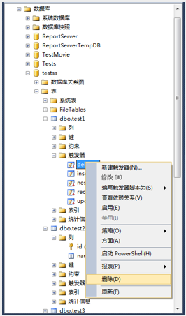
2、在删除对象弹出框-》点击确定-》不用刷新即可看到删除结果。
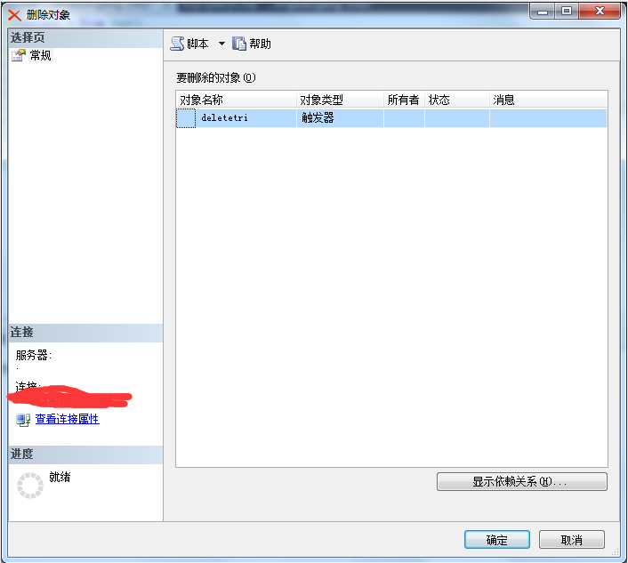
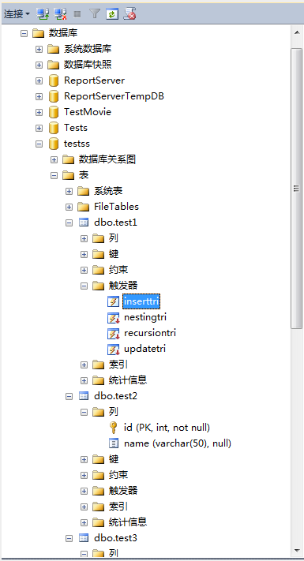
删除DDL触发器
1、连接数据库，选择数据库-》展开可编程性-》展开数据库触发器-》右键点击-》选择删除。
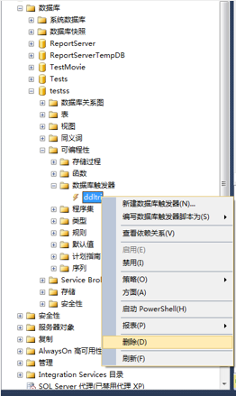
2、在删除对象弹出框-》点击确定-》不用刷新即可看到删除结果。
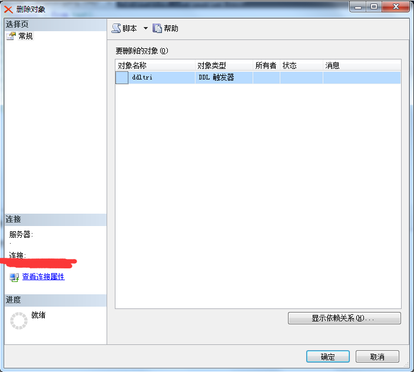
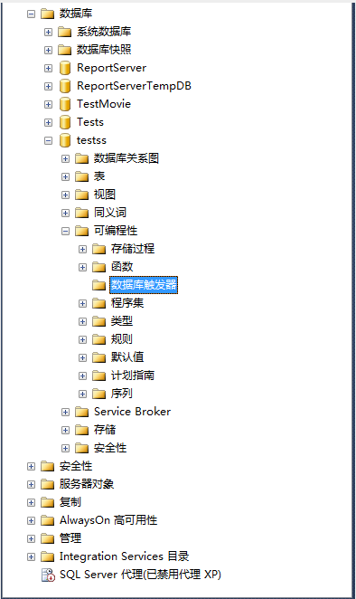
删除LOGON触发器
1、连接数据库-》展开服务器对象-》展开触发器-》右键点击-》选择删除。
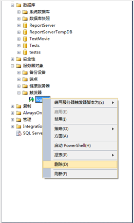
2、在删除对象弹出框-》点击确定-》不用刷新即可看到删除结果。
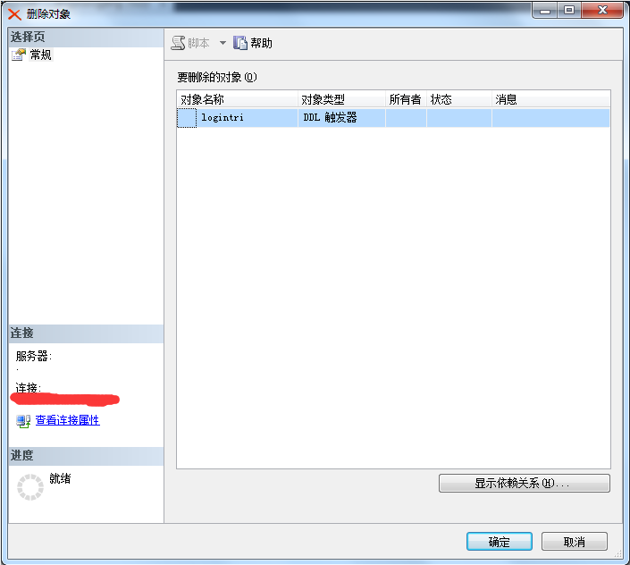
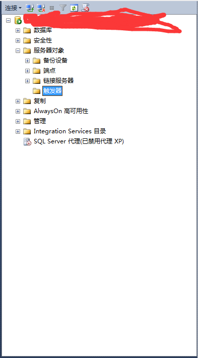
使用T-SQL脚本删除触发器
语法：
—声明数据库引用
use 数据库;
go
—判断是否存在，如果存在则删除
if exists(select * from sys.triggers where name=触发器名)
—删除DML触发器
drop trigger 触发器名;
——删除DDL触发器
—drop trigger 触发器名 on database;
—删除登录触发器
—drop trigger 触发器名 on all server;
go
示例：本示例演示删除DML更新触发器。
—声明数据库引用
use testss;
go
—判断是否存在，如果存在则删除
if exists(select * from sys.triggers where name=’updatetri’)
drop trigger updatetri;
go
示例结果：
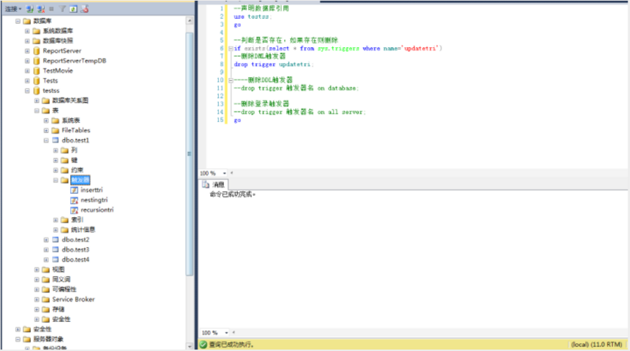

...
...
Copyright 2021 sunfy.top ALL Rights Reserved